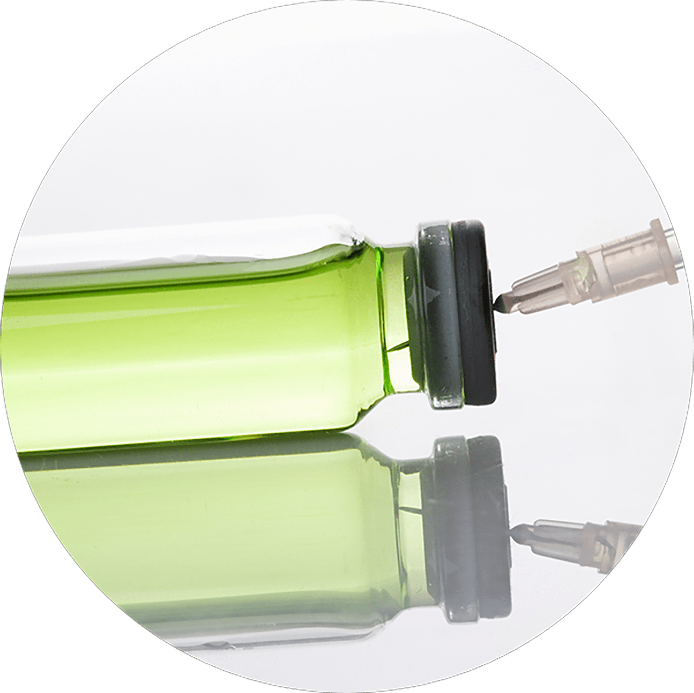
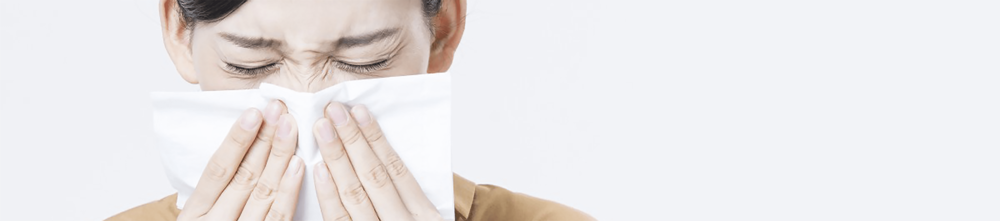

FORME WOMAN CLINIC
나를 위한 영양 수액 클리닉
나를위한 산부인과의
“영양 수액 클리닉”
은 의료진의 노하우와
기술력으로
바쁘고 피곤한 일상에 생기와 활력을 채워드립니다
나를위한 영양 수액 클리닉
피로는 풀고, 노화는 늦추고, 신체는 건강하게

바쁜 현대인들에게 부족한 영양소는 음식과 영양제만으로는
충족시키기 어려워
신체에 불균형이 나타나기도 하는데,
영양주사를 통해 이러한 체내 불균형을
해결할 수 있습니다.
나를위한 수액라인
-
비타팩
감기 / 몸살 주사

처방 프로토콜 라이넥 + 메가비타민 + 비타모 + 지씨엔에이씨 + 마시주사 + NS Cycle 투여 속도 효능 및 효과 주2회
/ 1~2개월30분 독한 감기를 이겨낼 수 있는 영양소를
공급하여
면역력을 향상시켜주며,
비타민C가
강한 항산화 작용과
해열 작용을 하고,
NAC(진해거담제)를
통해 기침 가래를 방지합니다. -
헬시팩
항 바이러스 / 면역 증진 / 대사 개선
처방 프로토콜 zinc + vit + 마늘주사 + selenium + 감초주사 Cycle 투여 속도 효능 및 효과 주2회
/ 1~2개월30분 강력한 항바이러스 작용으로
면역력을 증진시키고
에너지 대사 개선, 만성 간염 개선,
해독 작용의 효과를 가지고 있습니다.
또한 심혈관 개선, ATP 생성 촉진을
향상시킵니다. -
에너지팩
스트레스 완화 / 피로 회복
처방 프로토콜 라이넥 + 푸르설타민 + 하이코민 + 마시주사 + Pan B-comp + NS Cycle 투여 속도 효능 및 효과 주2회
/ 1~2개월30분 푸르설타민은 젖산을 에너지원으로
바꾸고 근육 내
피로 유발 물질 생성을
억제하여 신경계와
정신적 피로를
개선해 줍니다.
하이 코민은 엽산
대사에 중요한 영양소로
빈혈을
예방하고 체력 증강에 효과적입니다. -
스마트팩
기억력 개선
/ 혈액순환 개선 / 심장 강화처방 프로토콜 Ginko ext.(은행나무잎 추출) + L-카르니틴 + 피리독신
+ selenium + 마시주사Cycle 투여 속도 효능 및 효과 주2회
/ 1~2개월30분 뇌혈관 순환 개선해 기억력 감퇴와
불안을 개선하며
심장 혈관 및
심장근육을 강화하여
심혈관을
개선합니다. 면역력 증진, 강력한 항산화,
근육 피로 완화의 효과가 있습니다. -
쿨팩
통증 완화 / 장염 주사 / 생리통
처방 프로토콜 라이넥 + 하이코민 + 피리독신 + 마시주사 + NS Cycle 투여 속도 효능 및 효과 주2회
/ 1~2개월30분 마이어스 칵테일 구성으로
장염의 진정에 도움을 주며
경염, 신경통에 효과적인 비타민
성분을 포함하여
장염의 통증
완화에도 효과적입니다. -
화이트팩
강력 항산화 미백
/ 지방축적 억제처방 프로토콜 글루타치온 + 치옥트산 + 히씨파겐주(감초주사)
+ 메가비타민 + NSCycle 투여 속도 효능 및 효과 주2회
/ 1~2개월20분 글루타치온은 체내에서 가장 빠르게
활성산소를
제거해 주어 체내
노폐물 및 독성 제거에 효과적입니다.
또한 멜라닌 색소의 합성을 방지하여
미백 기능을
추가적으로 가지고 있습니다.
치옥트산은
식욕을 억제하고
에너지 소모량을 증가시켜 지방
축적을
억제합니다. 또한, 체내에서 산화되었던
비타민들을 다시 환원시켜 비타민 효과를
2배 이상 증가시켜 줍니다. -
블루팩
상처치유 / 피부 재생
/ 수술 후 회복처방 프로토콜 멀티블루 + 아미노산 수액 Cycle 투여 속도 효능 및 효과 주2회
/ 1~2개월30분 체내 부족한 미네랄을 공급하는
종합 미네랄 제제입니다.
아연은
피로회복, 상처치유, 탈모치료,
글루타치온
생성 보조에 관여하고,
망간은 체내 당질과 지질대사를
높여 단백질과 DNA 합성에 도움을 주며,
크롬은
중성지방과 콜레스테롤을
제거하고 고지혈증에
효과적입니다.
또한 구리는 빈혈 증상을 개선하고,
갑상선 기능을 향상시켜줍니다.
셀레늄은 면역력 증강에 효과적입니다. -
슬림팩
비만 / 요요 억제 주사
처방 프로토콜 아르기닌 + 카르니틴 + 비타모 + NS Cycle 투여 속도 효능 및 효과 주2회
/ 1~2개월50~60분 비만학회 권장 프로토콜로
아르기닌은 NO를
생성하여
비만 환자의 인슐린감수성 향상,
미토콘드리아 생합성으로
갈색지방조직으로
성장하며
L-카르니틴은 ATP를 생성하는
세포 내 미토콘드리아로 지방산을
운반하여
세포의 에너지
생성을 촉진시킵니다. -
프리미엄팩
프리미엄 영양주사
처방 프로토콜 라이넥 + 메가비타민 + 비타모 + 피리독신
+ 하이코민 + 마시주사 + NSCycle 투여 속도 효능 및 효과 주2회
/ 1~2개월30분 태반 제제와 함께 비타민B 군과
C를 골고루 갖춘
프리미엄 영양주사는
다양한 비타민과 아미노산을
한 번에 보충할 수 있어 면역력 증강 및
에너지 회복에 매우 효과적인
프로토콜입니다.